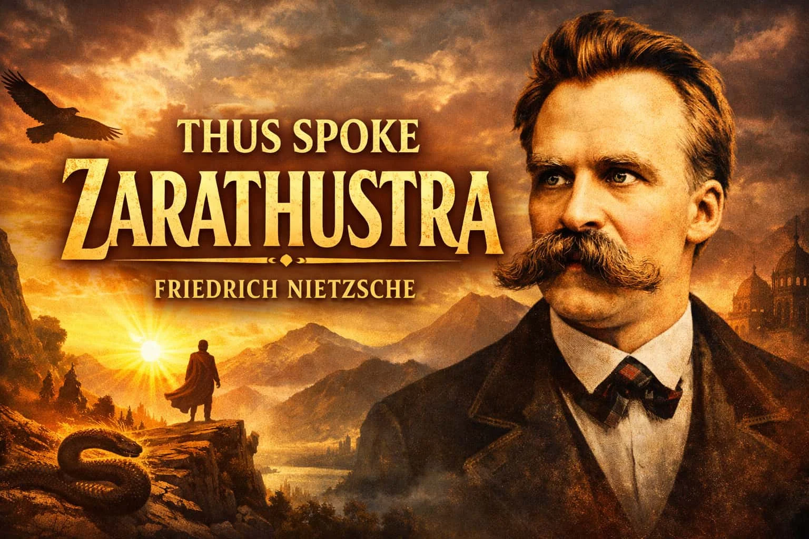

The Quran

The Quran is a holy book that provides guidance for every aspect of life.
It is deeply spiritual and helps people develop strong moral values and a closer relationship with God.
The Quran is a holy book that provides guidance for every aspect of life.
It is deeply spiritual and helps people develop strong moral values and a closer relationship with God.

Sherlock Holmes is a collection of detective stories written by Arthur Conan Doyle.
The books are full of mysteries, clever investigations, and logical reasoning, making them enjoyable for curious
readers.

Thus Spoke Zarathustra is a philosophical novel written by Friedrich Nietzsche.
It presents thought-provoking ideas about life, human potential, and personal growth.